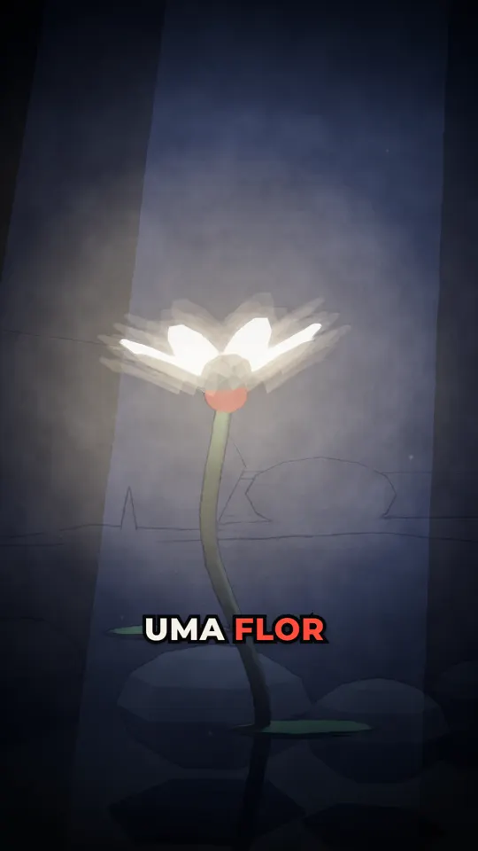
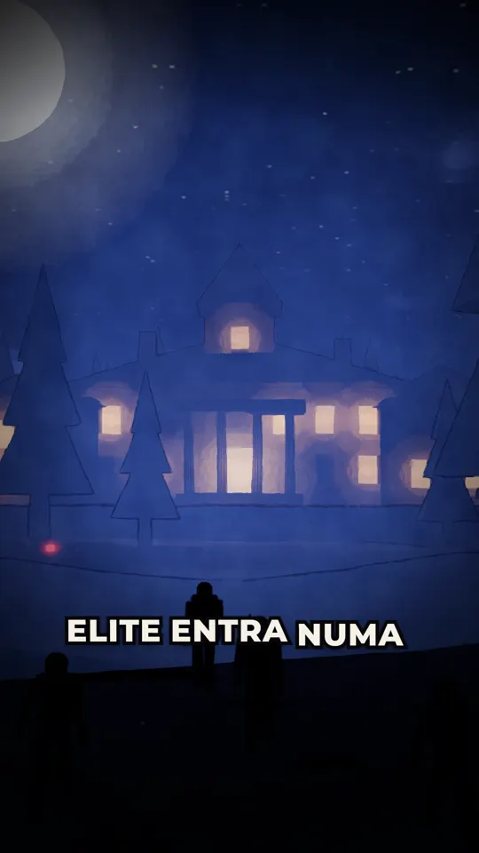
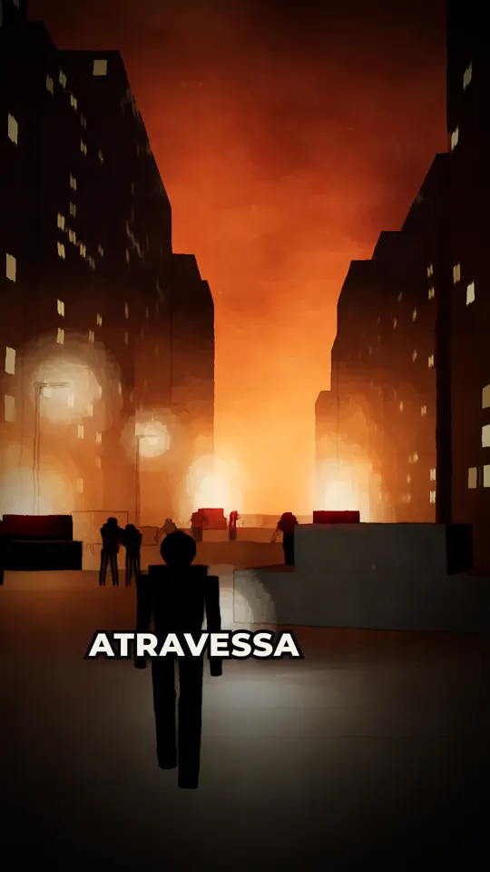
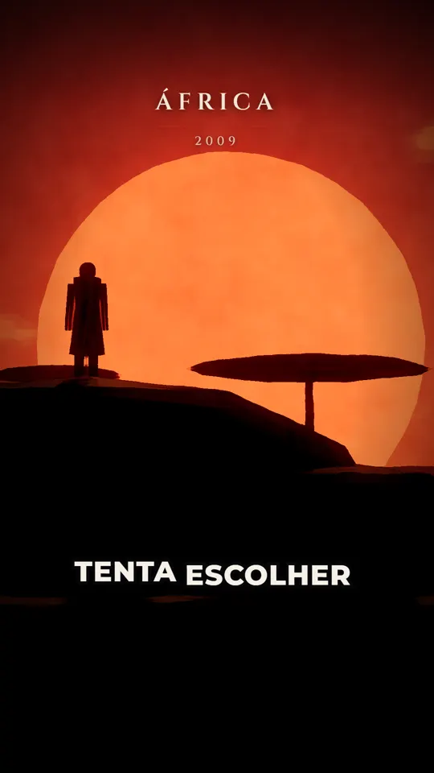
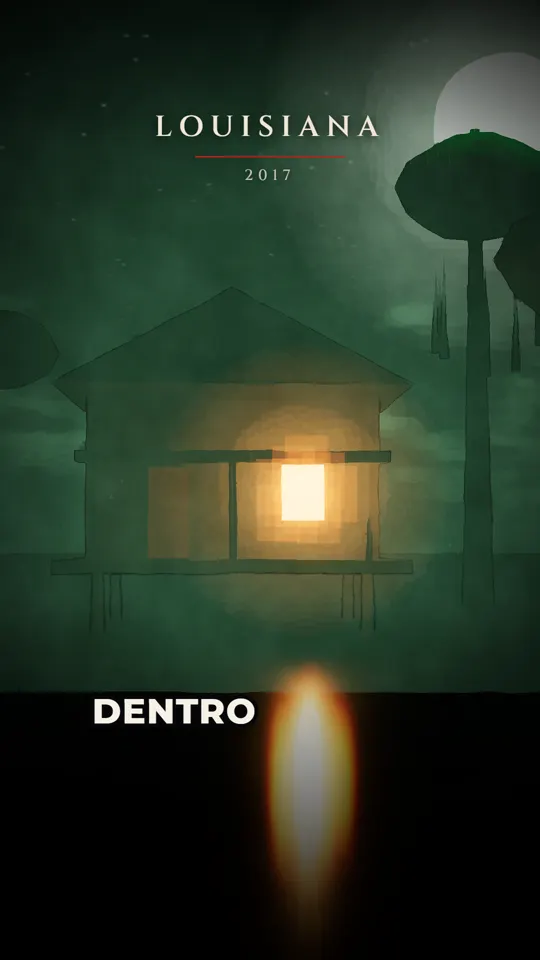
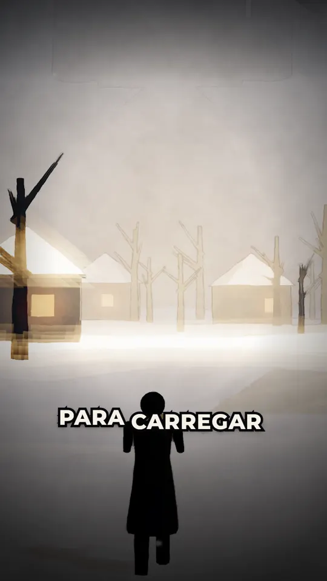

A história de uma saga inteira em um Short pintado por código
Como contamos quase trinta anos de uma série de terror em 2 min 35 s, com narração da ElevenLabs e cenários 3D que nascem do código e ganham acabamento de pintura. Aqui estão os prompts, os repositórios que serviram de referência e o vídeo que saiu deles.
Vídeo de fã. O exemplo resume a saga Resident Evil com palavras nossas e não tem vínculo com a Capcom, dona da marca. Ele não usa imagens, trilhas, logotipos nem rostos de personagens dos jogos: tudo o que aparece foi desenhado por código para este vídeo.
Outro formato
O que muda em relação ao tutorial
A linha de produção é a mesma do Caminho B: uma cena por frase, tempo de cada palavra tirado do áudio e aprovação de quadros antes do render. O que muda é a matéria prima da história e a cara da imagem.
Peça
Histórias "Nesse mundo"
Resumo de jogos
Roteiro
História inventada, em primeira pessoa
Fatos de uma obra que já existe, conferidos um a um, com narrador de fora
Imagem
Bonecos 2D desenhados em SVG
Cenários 3D gerados por código, com figuras só em silhueta
Acabamento
Cor chapada e contorno grosso
Filtro de pintura, névoa, feixes de luz e grão de película
Voz
Kokoro, no próprio computador
ElevenLabs, em uma tomada só
Legenda
Palavra forte em amarelo
Palavra forte em vermelho, mais letreiro de lugar e ano
Render
144 s
198 s
Repositórios de exemplo
Dois projetos abertos que mostraram o caminho
A direção de arte não saiu de um texto descrevendo um estilo. Saiu de dois repositórios públicos, cada um com o prompt usado pelo autor. Demos os dois links ao Claude e pedimos a técnica, não a obra.
The Last Page, de ChetasLua
Um curta de 65 segundos com cara de anime desenhado à mão, pintado, animado e sonorizado só com Python. Não há modelo de imagem nem arquivo pronto: cada pincelada, nuvem e nota musical sai do código, com as sementes fixas para o resultado se repetir.
O que levamos daqui. A pincelada de guache, o traço de nanquim nos contornos, os feixes de luz e o acabamento de película.
Onde olhar. O prompt está em PROMPT.md e o plano de cada tomada em docs/CONTRACT.md.
Um mundo submarino para nadar dentro do navegador: florestas de algas, raios de sol, um navio afundado e arraias. Tudo é gerado por código com WebGPU, sem imagens, modelos 3D nem arquivos de som, em um único arquivo HTML de 97 KB.
O que levamos daqui. A luz atravessando a névoa, as partículas em suspensão e a prova de que um cenário inteiro pode ser procedural.
Onde olhar. O prompt está em prompt.txt. A licença é MIT.
Referência não é molde. O repositório The Last Page não declara licença, então o código dele serve para estudo e não para cópia. Nenhuma linha dos dois projetos entrou no nosso vídeo: o que reaproveitamos foram as ideias de luz, textura e ritmo.
Com os pés no chão. O nosso resultado é uma aproximação. As duas referências têm um nível de desenho que este vídeo não alcança: aqui as pessoas são silhuetas feitas de blocos, e o que carrega a cena é a luz, a cor e a câmera.
Um bom resumo não lista acontecimentos. Ele escolhe um fio, e cada cena existe para puxar esse fio até a última frase.
Passo a passo
Como o vídeo nasce, em 8 passos
Do tema ao MP4. Os prompts de cada etapa estão na seção seguinte.
Escolha um fio. No exemplo, o fio é uma flor: ela abre o vídeo e volta na penúltima frase, como a coisa em que alguém viu um preço. Sem fio, o resumo vira lista de jogos.
Confira os fatos. Datas, lugares, ordem dos acontecimentos e quem fez o quê. Quem conhece o jogo percebe o erro no primeiro segundo e avisa nos comentários.
Escreva em capítulos. Uma frase por linha e uma linha em branco entre capítulos. O exemplo tem 34 frases em 7 capítulos e 377 palavras.
Grave a voz em uma tomada. O texto inteiro de uma vez na ElevenLabs, para o tom não mudar no meio. Custou 2.103 créditos.
Tire o tempo de cada palavra. O Whisper ouve o áudio e devolve o início e o fim de cada palavra. É isso que sincroniza cortes, legendas e efeitos.
Monte cenários, não cenas. Foram 14 cenários 3D, cada um com opções de luz, clima e figuras. Mudando a câmera e as opções, eles renderam as 34 cenas.
Pinte e revise. O acabamento de pintura entra por cima do 3D. Depois sai um quadro de cada cena em baixa resolução, em folhas de contato, para achar o que ficou escuro, estourado ou fora do quadro. Foram três rodadas.
Aprove, renderize e confira. Seis quadros em tamanho real para aprovar, render em 1080x1920 e uma última conferência em quadros tirados do próprio MP4.

0:01 a flor

0:28 a mansão

0:54 a cidade

1:27 África

1:41 o pântano

2:15 o vilarejo
Os 6 quadros enviados para aprovação antes do render.
O texto
O roteiro, capítulo por capítulo
Cada capítulo cobre uma fase da saga e termina em uma frase que empurra para a próxima. As frases mais curtas ficam nos cortes de capítulo, onde a narração respira.
Capítulo
Frases
O que conta
A origem
1 a 5
A flor, os três fundadores e o nome da empresa
A mansão
6 a 10
Julho de 1998, a equipe de elite e a traição do capitão
A cidade
11 a 16
O surto, quatro pontos de vista e o clarão que apaga tudo
O vírus muda de dono
17 a 22
Espanha, África e o terror que se espalha pelo mundo
A casa
23 a 26
O pântano da Louisiana e a menina que não é filha de ninguém
O vilarejo
27 a 30
A neve, o castelo e o pai que continua andando
O retorno
31 a 34
A volta às ruínas e o fio da flor amarrado
Ler a narração completa
Tudo começou com uma flor.
Ela nascia numa caverna da África, e quem a provava morria ou mudava para sempre.
Três homens viram nela um remédio, depois uma arma, depois um império.
Chamaram o império de Umbrella.
Um guarda-chuva, para um mundo que eles mesmos fariam chover.
Julho de mil novecentos e noventa e oito.
Nas montanhas Arklay, uma equipe de elite entra numa mansão para fugir de cães que não morrem.
Atrás de cada porta, a casa guarda alguém que esqueceu de morrer.
E o capitão deles sorri, porque sempre soube o que havia no porão.
A mansão explode ao amanhecer, mas o segredo já corria pelos esgotos da cidade vizinha.
Dois meses depois, Raccoon City acorda com fome.
Um policial no primeiro dia de trabalho atravessa uma cidade que mastiga.
Uma irmã procura o irmão entre os que já não lembram o próprio nome.
Uma mulher é caçada por uma coisa que repete uma única palavra.
O governo resolve o problema do único jeito que conhece.
Um clarão, e cem mil histórias viram um mapa em branco.
A Umbrella caiu, mas vírus não vai à falência.
Ele só troca de dono.
Numa vila da Espanha, um parasita antigo ensina os fiéis a obedecer.
Na África, um homem que se achava deus tenta escolher quem merece o amanhã.
Ele termina dentro de um vulcão.
Depois o medo ganha passaporte, e cidades inteiras somem numa névoa azul.
Então o horror desiste do mundo e volta para dentro de casa.
Num pântano da Louisiana, uma família põe a mesa para um homem que procura a esposa.
A menina da casa não é filha de ninguém.
É uma arma com rosto de criança, que só queria uma família.
Anos depois, o mesmo homem perde a filha num vilarejo coberto de neve.
Quatro senhores, uma mãe de asas negras e um castelo que tem sede.
Ele descobre que já estava morto desde o pântano.
E mesmo assim caminha, porque pai não precisa de coração batendo para carregar uma filha.
Quase trinta anos depois do clarão, alguém volta às ruínas de Raccoon City.
Porque essa história nunca foi sobre monstros.
Foi sobre gente que olhou para uma flor e viu um preço.
E sobre os poucos que, no escuro, ainda escolhem abrir a próxima porta.
Repare no texto. Os anos estão por extenso, porque o texto vai para a voz. Nenhum personagem é chamado pelo nome: "um policial", "uma irmã", "um pai". Isso deixa a narração mais próxima de uma lenda e ajuda a imagem, que só mostra silhuetas.
Prompts
O que pedimos, e os prompts prontos para reusar
Primeiro, os pedidos reais da conversa, que foram curtos. Depois, cinco prompts completos que juntam esses pedidos com as regras que o Claude seguiu no caminho.
Os pedidos desta conversa
1
"Vamos utilizar esse exemplo para criar algo mais poético e cinematográfico", com o link do repositório The Last Page.
Define a direção de arte
2
"Vamos fazer um resumo das histórias dos jogos de Resident Evil, com elemento de terror."
Define o tema e o tom
3
"Mais um exemplo de CGI cinematográfico para usarmos", com o link do repositório Abyssal Garden.
Soma uma segunda referência no meio do trabalho
4
"Deixe ainda mais performáticas as imagens, crie como o primeiro exemplo que te enviei", com o link do vídeo no X.
Foi o que gerou o acabamento de pintura
5
"Aprovar e renderizar."
Depois de ver os 6 quadros
Prompt J1: roteiro do resumo
Troque [JOGO OU SAGA] pelo seu tema
Escreva a narração de um Short de 2:30 que resume a história de [JOGO OU SAGA], em português do Brasil, com tom poético e de terror.
Antes de escrever, pesquise e confira os fatos: ordem dos acontecimentos, datas, lugares e quem fez o quê. Liste as fontes e me avise do que não conseguiu confirmar.
Escolha um fio condutor: uma imagem ou ideia que abre o vídeo e volta nas últimas frases. Todo capítulo precisa puxar esse fio.
Estrutura: gancho de 1 frase → origem → um capítulo por jogo ou fase da saga, na ordem da história → fecho que retoma o gancho.
Regras:
- 360 a 400 palavras;
- frases de até 20 palavras, uma frase por linha;
- uma linha em branco entre capítulos;
- toda frase precisa de uma imagem concreta, que dê para animar;
- anos e números por extenso, porque o texto vai para a voz;
- não chame os personagens pelo nome: descreva quem são ("um policial no primeiro dia de trabalho").
Não copie falas, textos nem descrições oficiais do jogo. Conte com palavras suas e não entregue o final de um lançamento recente.
Entregue só a narração.
Prompt J2: direção de arte a partir de um repositório
Funciona com qualquer projeto aberto que publique o prompt
Vamos usar este repositório como referência de direção de arte, para criar algo mais poético e cinematográfico:
[LINK DO REPOSITÓRIO, por exemplo https://github.com/ChetasLua/the-last-page]
Vídeo de demonstração: [LINK DO VÍDEO]
1. Leia o README e o prompt publicado e veja o vídeo.
2. Me diga em uma lista curta o que faz aquela imagem funcionar: paleta, luz, textura, movimento de câmera e ritmo de corte.
3. Proponha como chegar perto disso neste projeto Remotion, em 1080x1920, sem usar nenhum arquivo de imagem: cenários 3D gerados por código com three.js e um acabamento aplicado por cima.
4. Não copie código, personagens nem cenas da referência. Quero a técnica, não a obra. Confira a licença do repositório e me diga o que ela permite.
5. Antes de montar o vídeo inteiro, faça 4 cenas de teste e me mostre um quadro de cada.
Prompt J3: voz na ElevenLabs
Uma tomada, com o custo avisado antes
Gere a narração de [ARQUIVO DO ROTEIRO] na ElevenLabs, em português do Brasil, com uma voz grave e calma, de narrador de documentário.
- Faça uma tomada só, com o texto inteiro, para o tom não mudar no meio.
- Antes de gerar, me diga quantos créditos vai gastar. Não gere de novo sem eu pedir.
- Salve o áudio em public/ e use o Whisper para tirar o início e o fim de cada palavra, alinhando com o texto original do roteiro.
- A chave da ElevenLabs fica só no arquivo .env. Nunca mostre a chave no chat, no código nem em commit.
Um tropeço que vale saber. No plano gratuito, a API da ElevenLabs recusa as vozes da biblioteca. A saída foi gerar pelo conector da ElevenLabs dentro do Claude. Gerar pelo site e entregar o MP3 pronto também resolve. A comparação entre as opções de voz está em Opções de voz.
Prompt J4: o vídeo completo
Cenários reaproveitados, silhuetas e aprovação antes do render
Crie o vídeo completo desta narração neste projeto Remotion, seguindo a direção de arte que combinamos.
1. Uma cena por frase, com a duração exata da fala.
2. Monte poucos cenários 3D reaproveitáveis, cada um com opções de luz, clima e figuras. Use câmeras diferentes para tirar várias cenas do mesmo cenário.
3. Pessoas e criaturas aparecem só como silhuetas genéricas. Nenhum logotipo, rosto, roupa ou arte de personagem que exista no jogo.
4. Câmera sempre em movimento lento. Em vídeo vertical o campo de visão horizontal é estreito: mantenha o assunto perto do centro.
5. Quando a história mudar de lugar, mostre um letreiro com o lugar e o ano no alto da tela.
6. Legendas palavra por palavra, brancas com contorno, com a palavra mais forte de cada frase em vermelho, no terço inferior e longe dos botões do Shorts.
7. Tudo o que se move precisa ser calculado a partir do número do quadro, sem sorteio, para o render em paralelo não piscar.
8. Gere um quadro de cada cena em baixa resolução, monte folhas de contato, revise e corrija o que estiver escuro, estourado ou fora do quadro.
Antes do render final, salve 6 quadros de momentos diferentes em tamanho real e me mostre.
Depois de eu aprovar, renderize em 1080x1920, 30 fps, MP4, e confira quadros tirados do próprio MP4.
Prompt J5: acabamento de pintura
Para quando o 3D ainda parece 3D
Deixe as imagens mais fortes, no estilo de pintura à mão da referência.
Aplique um acabamento em tela cheia por cima do 3D, com:
- filtro de Kuwahara, para transformar o degradê liso em manchas de pincel;
- traço de nanquim nos contornos, tirado da profundidade da cena;
- halo suave em volta das luzes;
- manchas de guache e um leve tremor de mão;
- céu com nuvens e estrelas geradas por código.
Deixe a força de cada efeito ajustável por cenário e me mostre o antes e o depois do mesmo quadro.
Por dentro
A receita técnica
Para quem quer entender o que o Claude montou, ou cobrar isso dele no próximo vídeo.
Um palco 3D dentro do Remotion
O three.js roda dentro do Remotion pelo pacote @remotion/three. Cada cenário é um componente React com céu, névoa, terreno, luzes e figuras. O render precisa da opção --gl=angle para a placa de vídeo entrar.
A pintura vem depois do 3D
A cena é desenhada primeiro em uma textura, junto com a profundidade de cada ponto. Um segundo passo lê as duas e pinta a tela: manchas de pincel, traço onde a profundidade muda de repente, halo nas luzes e grão.
Nada de sorteio
Neve, chuva, brasa e fumaça são calculadas a partir do número do quadro e de uma semente fixa. O Remotion renderiza quadros fora de ordem e em paralelo, então qualquer valor sorteado faria a imagem piscar.
A tela em pé é estreita
Em 1080x1920, a câmera enxerga só uns 12 graus para cada lado. Figura posta um pouco fora do centro some do quadro. Foi o erro mais repetido nas folhas de contato.
Um cenário rende várias cenas
As frases 20 e 21 usam o mesmo cenário de savana. A segunda liga a opção do vulcão, muda a câmera e ganha um leve tremor.
# pacotes do 3D
npm i three @react-three/fiber @remotion/three
# 1. áudio já gravado → tempo de cada palavra
python tts/gerar2.py re --audio public/re-eleven.mp3
# 2. um quadro de cada cena, para as folhas de contato
node tools/quadros.mjs todas --comp=RE --escala=0.33 --pasta=out/re
# 3. render final (o 3D precisa do ANGLE)
npx remotion render src/index.ts RE out/re.mp4 --codec=h264 --crf=18 --gl=angle
Os arquivos são deste projeto.gerar2.py e quadros.mjs foram escritos pelo Claude durante a conversa, a partir dos prompts acima. No seu projeto os nomes podem ser outros: o que importa é a ordem das três etapas.
Métricas
Os números deste vídeo
34cenas, tiradas de 14 cenários 3D
2.103créditos da ElevenLabs, dos 10 mil mensais do plano gratuito
198 sde render para 4.650 quadros em um PC comum
169 MBo MP4 em 1080x1920. Nesta página ele está em 720p
Quanto rende o plano gratuito. Uma narração deste tamanho gasta perto de um quinto dos créditos do mês. Dá para fazer 4 vídeos como este sem pagar, desde que cada um saia em uma tomada só.
O que ainda não ficou bom
As figuras são blocos. Funcionam contra a luz, como no quadro da África. De perto parecem bonecos.
A legenda cobre a figura em duas cenas. Na rua em chamas e na neve, a palavra cai em cima de quem está andando.
Duas cenas são difíceis de ler. O objeto caído na chuva e a subida da câmera na cena 5 pedem um desenho mais claro.
O pai de costas esconde a filha. A frase mais forte do vídeo merecia um ângulo que mostrasse os dois.
Cuidados
Resumir a obra de outra pessoa pede mais cuidado
A história de um jogo tem dono. O que é seu é a forma de contar: o texto, a voz e a imagem. Vale somar estes pontos aos cuidados do tutorial.
Conte com as suas palavras
Nada de falas, textos de menu ou descrições oficiais copiadas. Um resumo é um texto novo sobre a obra.
Nada tirado do jogo
Sem capturas de tela, trechos de trailer, trilha sonora, logotipos ou rostos de personagens. No exemplo, a empresa da história aparece só como um objeto comum, sem logotipo.
Avise que é vídeo de fã
Diga na descrição que o vídeo não tem vínculo com o estúdio e que os nomes e as marcas pertencem aos donos.
Fato errado custa caro
Peça as fontes ao Claude e confira você também. E não conte o final de um jogo que acabou de sair.
Sem garantia. Fazer tudo isso reduz o risco, mas não elimina. O dono da marca pode pedir a retirada de um vídeo mesmo assim, e cada plataforma tem as próprias regras. Este texto é informativo e não substitui orientação jurídica.
Tem uma saga para contar? Comece pelo fio.
O Prompt J1 entrega o roteiro com os fatos conferidos. O resto da linha de produção está no tutorial.